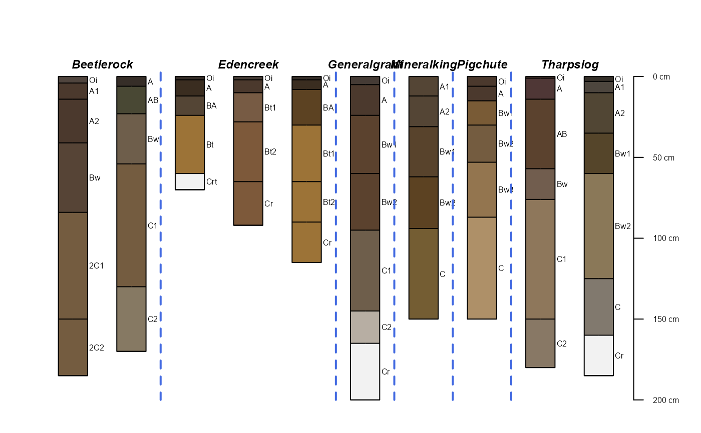
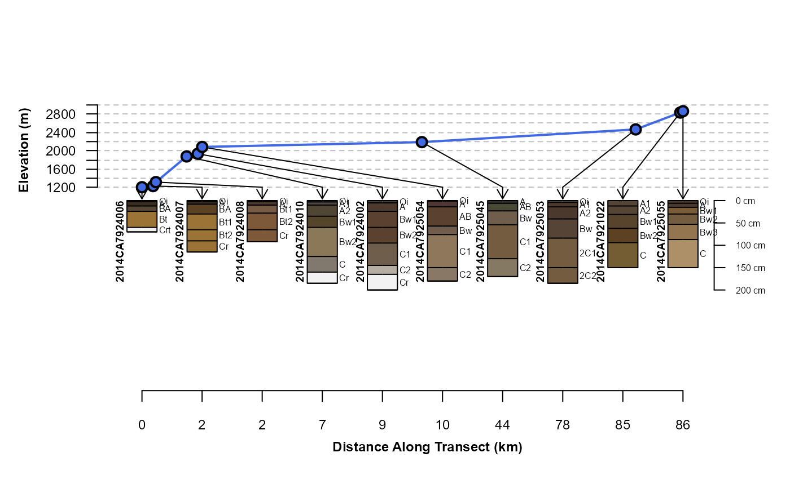
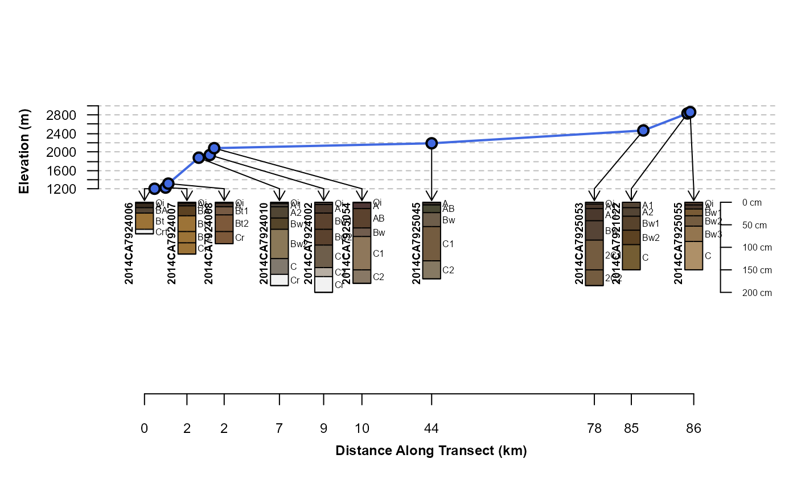
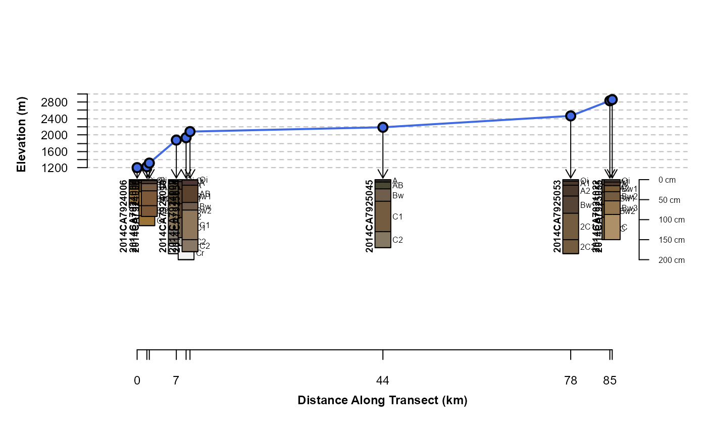
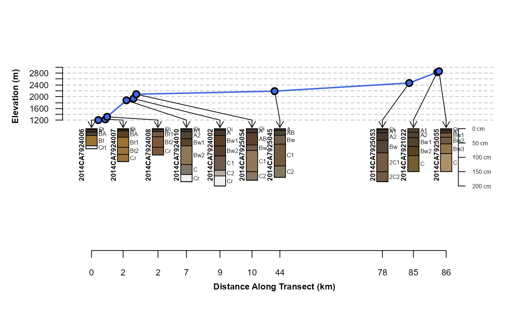
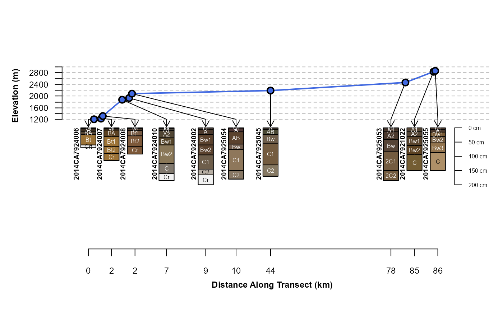

plotTransect.RdPlot a collection of Soil Profiles linked to their position along some gradient (e.g. transect).
plotTransect(s, grad.var.name, grad.var.order = order(site(s)[[grad.var.name]]), transect.col = "RoyalBlue", tick.number=7, y.offset = 100, scaling.factor = 0.5, distance.axis.title = "Distance Along Transect (km)", crs = NULL, grad.axis.title = NULL, dist.scaling.factor=1000, spacing='regular', fix.relative.pos=list(thresh = 0.6, trace = TRUE, maxIter = 5000), ...)
| s | a |
|---|---|
| grad.var.name | the name of a site-level attribute containing gradient values |
| grad.var.order | optional vector of indices used to override sorting along |
| transect.col | color used to plot gradient (transect) values |
| tick.number | number of desired ticks and labels on the gradient axis |
| y.offset | vertical offset used to position profile sketches |
| scaling.factor | scaling factor used to adjust profile sketches |
| distance.axis.title | a tital for the along-transect distances |
| crs | an optional |
| grad.axis.title | a title for the gradient axis |
| dist.scaling.factor | scaling factor applied to linear distance units, default is conversion from m to km |
| spacing | regular (profiles aligned to an integer grid) or relative (relative distance along transect) spacing |
| fix.relative.pos | FALSE to suppress, otherwise list of arguments to |
| ... | further arguments passed to |
Depending on the nature of your SoilProfileCollection and associated gradient values, it may be necessary to tinker with figure margins, y.offset and scaling.factor.
This function is very much a work in progress, ideas welcome!
An invisibly-returned data.frame object:
scaled gradient values
cumulative distance, scaled to the interval of 0.5, nrow(coords) + 0.5
cumulative distance computed along gradient, e.g. transect distance
sorted gradient values
x coordinates, ordered by gradient values
y coordinate, ordered by gradient values
a vector index describing the sort order defined by gradient values
D.E. Beaudette
# \donttest{ if(require(aqp) & require(sp) & require(soilDB) ) { # sample data data("mineralKing", package = "soilDB") # quick overview par(mar=c(1,1,2,1)) groupedProfilePlot(mineralKing, groups='taxonname', print.id=FALSE) # init coords and CRS coordinates(mineralKing) <- ~ x_std + y_std proj4string(mineralKing) <- '+proj=longlat +datum=NAD83' # projected CRS, units of meters crs.utm <- CRS('+proj=utm +zone=11 +datum=NAD83') # adjust margins par(mar=c(4.5,4,4,1)) # standard transect plot, profile sketches arranged along integer sequence plotTransect(mineralKing, grad.var.name='elev_field', crs=crs.utm, grad.axis.title='Elevation (m)', label='pedon_id', name='hzname') # default behavior, attempt adjustments to prevent over-plot and preserve relative spacing # use set.seed() to fix outcome plotTransect(mineralKing, grad.var.name='elev_field', crs=crs.utm, grad.axis.title='Elevation (m)', label='pedon_id', name='hzname', width=0.15, spacing = 'relative') # attempt relative positioning based on scaled distances, no corrections for overlap # profiles are clustered in space and therefore over-plot plotTransect(mineralKing, grad.var.name='elev_field', crs=crs.utm, grad.axis.title='Elevation (m)', label='pedon_id', name='hzname', width=0.15, spacing = 'relative', fix.relative.pos = FALSE) # customize arguments to aqp::fixOverlap() plotTransect(mineralKing, grad.var.name='elev_field', crs=crs.utm, grad.axis.title='Elevation (m)', label='pedon_id', name='hzname', width=0.15, spacing = 'relative', fix.relative.pos = list(maxIter=6000, trace=TRUE, adj=0.2, thresh=0.7)) plotTransect(mineralKing, grad.var.name='elev_field', crs=crs.utm, grad.axis.title='Elevation (m)', label='pedon_id', name='hzname', width=0.15, spacing = 'relative', fix.relative.pos = list(maxIter=6000, trace=TRUE, adj=0.2, thresh=0.5)) }#>#>#># }